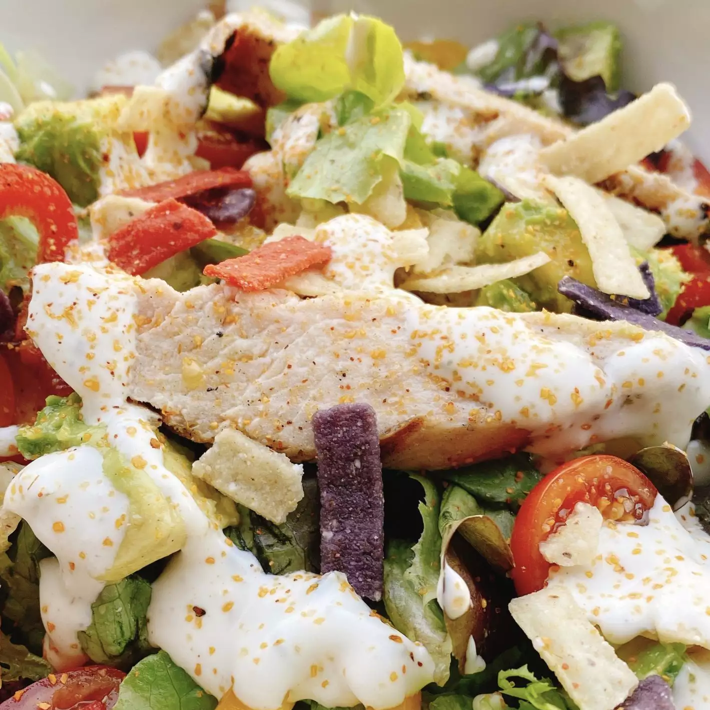

Grilled Chicken Bacon Ranch Salad

Nothing better than a fresh saldad!
This chicken bacon ranch salad is packed full of protein and makes enough to serve a crowd, but can be scaled down easily!
Ingredients
- 4 heads baby artisan lettuce
- 1 pound grilled chicken breast, sliced
- 10 ounces multi-colored cherry tomatoes, halved, or more to taste
- 1 cup thinly sliced mini peppers
- ½ pound cooked bacon, chopped
- ½ cup ranch dressing
- 2 medium avocados - peeled, pitted, and cubed
- ½ cup multicolored tortilla strips
- pollo asado seasoning (Optional)
Steps
- Step 1: Remove core from each mini artisan lettuce. Place each lettuce head on a large cutting board and cut each lettuce head into bite-sized pieces, using a sharp knife. Place lettuce in a very large bowl.
- Step 2: Add chicken, tomatoes, and peppers to salad greens and sprinkle with chopped bacon. Pour in ranch dressing and toss to combine.
- Step 3: Sprinkle cubed avocado and tortilla strips over the the salad and season with pollo asado seasoning, if desired.